Auffusion: Leveraging the Power of Diffusion and Large Language Models for Text-to-Audio Generation
Jinlong Xue1, Yayue Deng1, Yingming Gao1, Ya Li1
1Beijing University of Posts and Telecommunications, Beijing, China
Abstract
Recent advancements in diffusion models and large language models (LLMs) have significantly propelled the field of AIGC. Text-to-Audio (TTA), a burgeoning AIGC application designed to generate audio from natural language prompts, is attracting increasing attention. However, existing TTA studies often struggle with generation quality and text-audio alignment, especially for complex textual inputs. Drawing inspiration from state-of-the-art Text-to-Image (T2I) diffusion models, we introduce Auffusion, a TTA system adapting T2I model frameworks to TTA task, by effectively leveraging their inherent generative strengths and precise cross-modal alignment. Our objective and subjective evaluations demonstrate that Auffusion surpasses previous TTA approaches using limited data and computational resource. Furthermore, previous studies in T2I recognizes the significant impact of encoder choice on cross-modal alignment, like fine-grained details and object bindings, while similar evaluation is lacking in prior TTA works. Through comprehensive ablation studies and innovative cross-attention map visualizations, we provide insightful assessments of text-audio alignment in TTA. Our findings reveal Auffusion’s superior capability in generating audios that accurately match textual descriptions, which further demonstrated in several related tasks, such as audio style transfer, inpainting and other manipulations.
Note
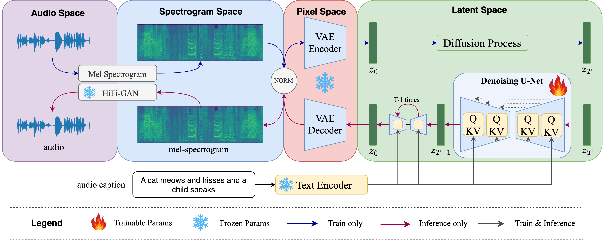
Figure 1: An overview of Auffusion architecture. The whole training and inference process include back-and-forth transformation between four feature spaces: audio, spectrogram, pixel and latent space. Note that U-Net is initialized with pretrained text-to-image LDM.
Table of Contents
Text-to-Audio generation
Short Samples:
| Two gunshots followed by birds chirping | A dog is barking | People cheering in a stadium while rolling thunder and lightning strikes |
Acoustic Environment Control:
| A man is speaking in a huge room. | A man is speaking in a small room. | A man is speaking in a studio. |
Material Control:
| Chopping tomatos on a wooden table. | Chopping meat on a wooden table. | Chopping potatos on a metal table. |
Pitch Control:
| Sine wave with low pitch. | Sine wave with medium pitch. | Sine wave with high pitch. |
Temporal Order Control:
| A racing car is passing by and disappear. | Two gunshots followed by birds flying away while chirping | Wooden table tapping sound followed by water pouring sound. |
Label-to-Audio Generation:
| Siren | Thunder | Oink |
| Explosion | Applause | Fart |
| Chainsaw | Fireworks | Chicken, rooster |
Unconditional Generation:
| "Null" |
TTA Generation with ChatGPT Text Prompt
| Birds singing sweetly in a blooming garden | A kitten mewing for attention | Magical fairies laughter echoing through an enchanted forest |
| Soft whispers of a bedtime story being told | A monkey laughs before getting hit on the head by a large atomic bomb | A pencil scribbling on a notepad |
| The splashing of water in a pond | Coins clinking in a piggy bank | A kid is whistling in a studio |
| A distant church bell chiming noon | A car’s horn honking in traffic | Angry kids breaking glass in frustration |
| An old-fashioned typewriter clacking | A girl screaming at the most demented and vile sight | A train whistle blowing in the distance |
Multi Event Comparision
| spacespaceTextDescriptionspacespace | Ground-Truth | AudioGen | AudioLDM | AudioLDM2 | Tango | Auffusion |
|---|---|---|---|---|---|---|
| A bell chiming as a clock ticks and a man talks through a television speaker in the background followed by a muffled bell chiming | ||||||
| Buzzing and humming of a motor with a man speaking | ||||||
| A series of machine gunfire and two gunshots firing as a jet aircraft flies by followed by soft music playing | ||||||
| Woman speaks, girl speaks, clapping, croaking noise interrupts, followed by laughter | ||||||
| A man talking as paper crinkles followed by plastic creaking then a toilet flushing | ||||||
| Rain falls as people talk and laugh in the background. | ||||||
| People walk heavily, pause, slide their feet, walk, stop, and begin walking again. |
Cross Attention Map Comparision
| 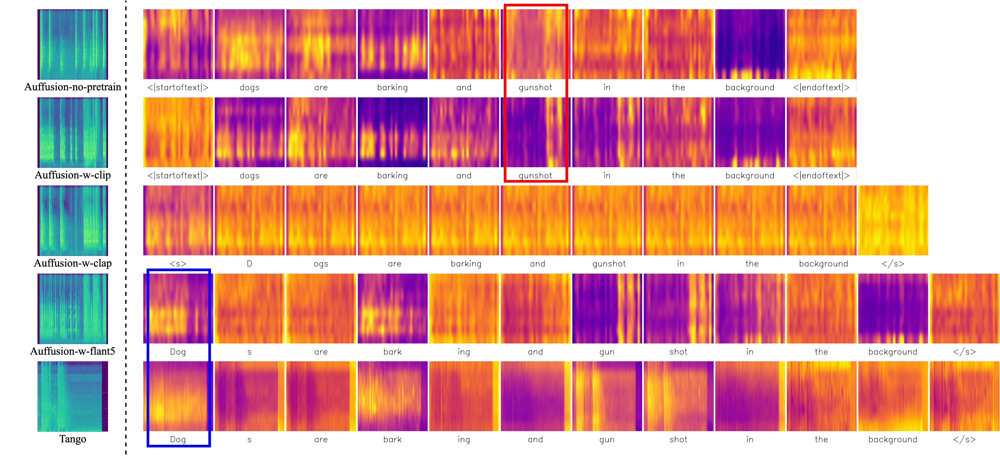 | ||
|---|---|---|
| Auffusion-no-pretrain | Auffusion-w-clip | Auffusion-w-clap |
| Auffusion-w-flant5 | Tango | |
Text-Guided Audio Style Transfer
| From cat screaming to car racing. |
|---|
| 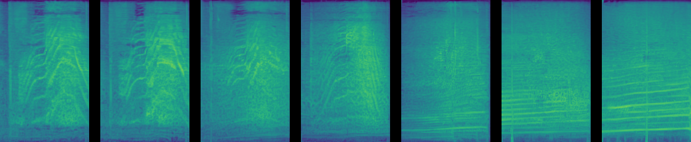 |
| From bird chirping to ambulance siren. |
| 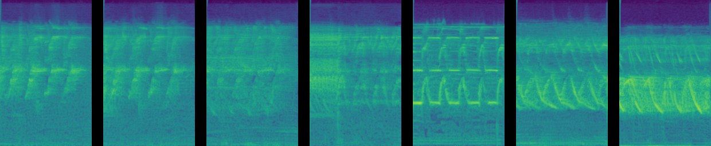 |
| From baby crying to cat meowing. |
| 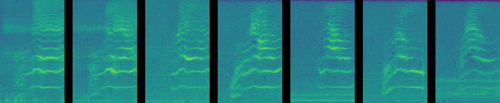 |
Audio Inpainting Examples
| Ground-Truth | Masked Result | Inpainting Result |
|---|---|---|
| 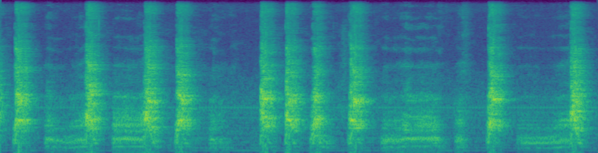 | 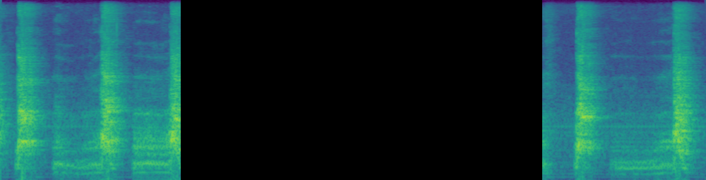 | 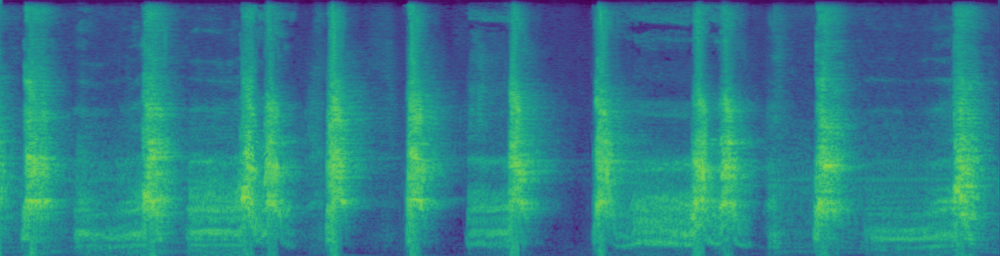 |
| 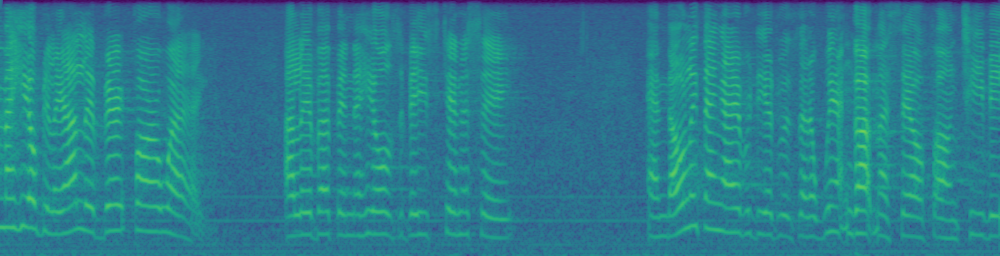 | 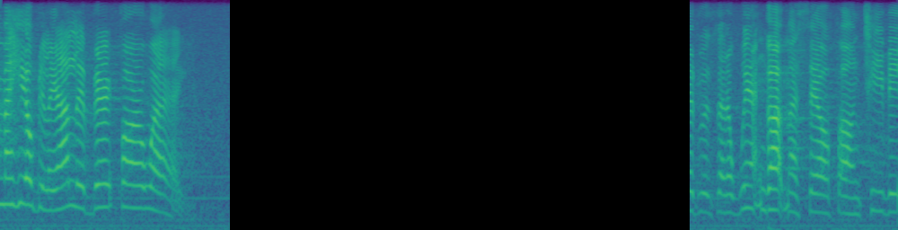 | 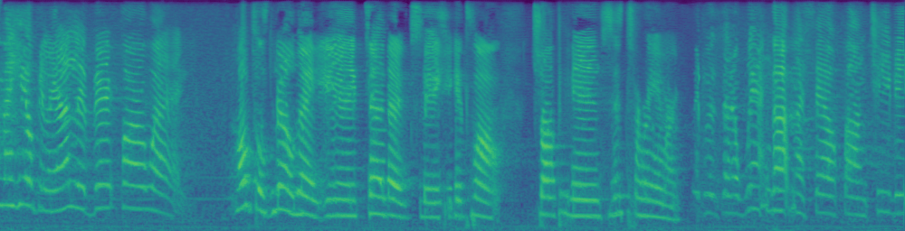 |
| 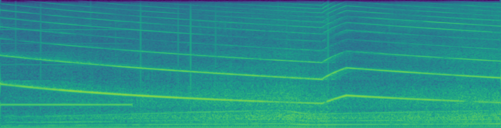 | 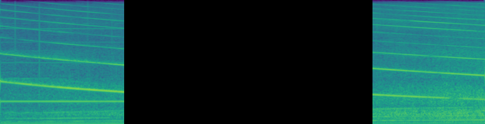 | 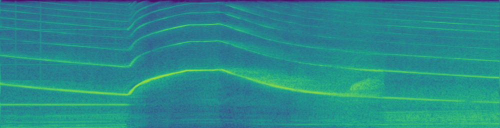 |
Attention-based Replacement Examples
| Source Sample | Target Sample |
|---|---|
| 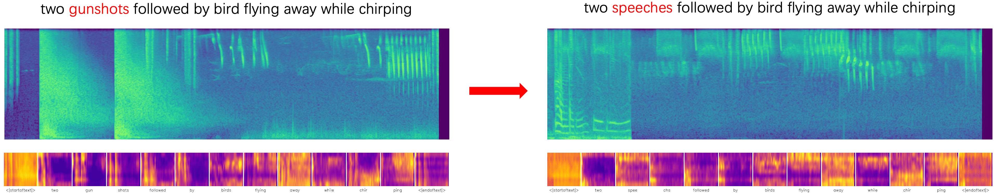 | |
| 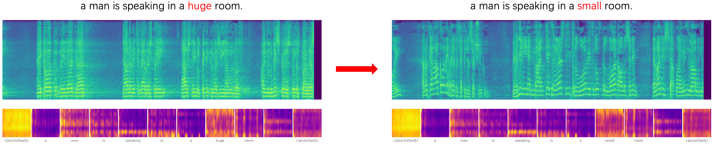 | |
Attention-based Reweighting Examples
| Source Sample | Target Sample |
|---|---|
| 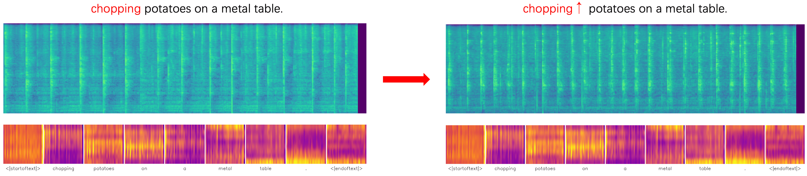 | |
| 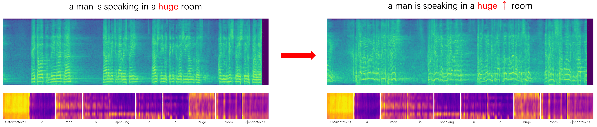 | |
Other comments
1. We will share our code on github, which aims to open source the audio generation model training and evaluation for easier comparison.
2. We are confirming the data-related copyright issue, after which the pretrained models will be released.
Acknowledgement
This website is created based on https://github.com/AudioLDM/AudioLDM.github.io